01-SpringMVC入门
SpringMVC是隶属于Spring框架的一部分吗，是对Servlet进行了封装。SpringMVC是处于Web层的框架，所以其主要的作用就是用来接收前端发过来的请求和数据然后经过处理并将处理的结果响应给前端，所以如何处理请求和响应是SpringMVC中非常重要的一块内容。
SpringMVC概述
Web架构
现在web程序大都基于三层架构来实现：
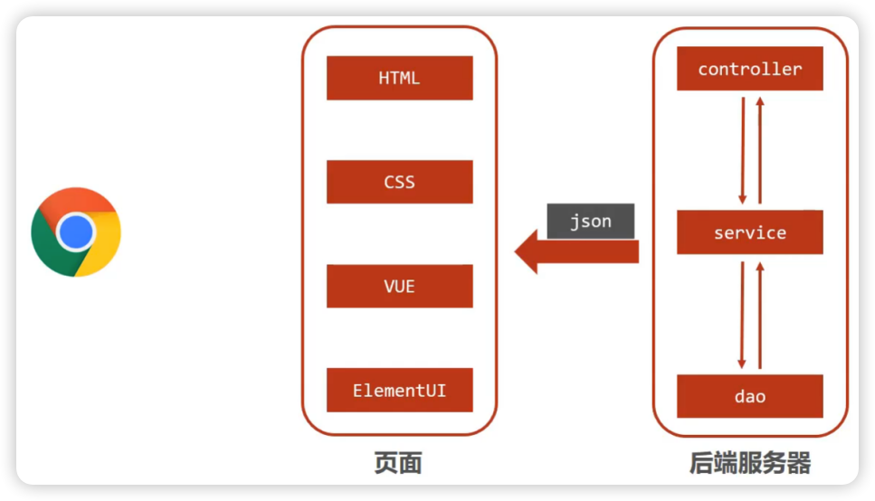浏览器发送一个请求给后端服务器，后端服务器现在是使用Servlet来接收请求和数据；
如果所有的处理都交给Servlet来处理的话，所有的东西都耦合在一起，对后期的维护和扩展极为不利；将后端服务器Servlet拆分成三层，分别是web、service和dao；
- web层主要由servlet来处理，负责页面请求和数据的收集以及响应结果给前端；
- service层主要负责业务逻辑的处理；
- dao层主要负责连接数据库，进行数据的增删改查操作；
servlet处理请求和数据的时候，存在的问题是一个servlet只能处理一个请求；针对web层进行了优化，采用了MVC设计模式，将其设计为controller、view和model：
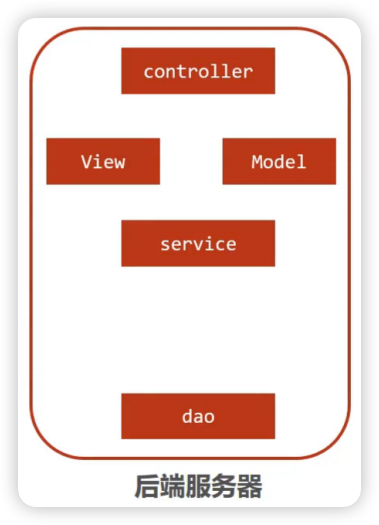controller负责请求和数据的接收，接收后将其转发给service进行业务处理；
service根据需要调用dao对数据进行增删改查；
dao把数据处理完后将结果交给service，service再交给controller；
同步请求：controller根据需求组装成Model和View，Model和View组合起来生成页面转发给前端浏览器（这样做的好处就是controller可以处理多个请求，并对请求进行分发，执行不同的业务操作）；
现在更多使用的是异步请求方式，后端不需要返回view视图，而是将数据以json格式返回
SpringMVC
SpringMVC是一种基于Java实现MVC模型的轻量级Web框架，相比于Servlet使用更加简单、开发更加便捷。
SpringMVC主要负责的就是：① controller如何接收请求和数据；② 如何将请求和数据转发给业务层；③ 如何将响应数据转换成json发回到前端。
SpringMVC入门案例
SpringMVC是一个Web框架，是用来替换Servlet的，在JavaWeb中如何使用Servlet进行开发呢？忘记的话看前面的文章【JavaWeb_Servlet】
SpringMVC的制作流程与Servlet几乎一致：
1、创建Maven结构的web工程
2、设置tomcat服务器：tomcat插件
3、导入坐标（SpringMVC+Servlet）
4、定义处理请求的功能类（Controller）
5、设置请求映射
6、将SpringMVC设定加载到tomcat容器中
SpringMVC实现流程
步骤1：创建webapp内核的Maven项目
步骤2：导入依赖坐标（Servlet、SpringMVC）
注意导入的版本，建议使用JDK8以及5.3.0以下的SpringMVC版本配置，否则后面会出现奇奇怪怪的bug…到现在不知道如何解决jdk17不兼容的问题，后面做大项目的时候一定解决这个问题！
1 | <dependency> |
步骤3：创建SpringMvcConfig配置类
1 |
|
步骤4：创建Controller类
1 |
|
Controller要注意的点有如下几个：
（1）@Controller将其作为Bean交给Spring管理；
（2）@RequestMapping("/save")指定request请求访问的地址，相当于Servlet中的WebServlet；
（3）@ResponseBody指定后端返回的response响应是json数据；
步骤5：使用Servlet容器启动配置类替换web.xml
1 | public class ServletInitConfig extends AbstractDispatcherServletInitializer { |
配置类要继承这个AbstractDispatcherServletInitializer类；并且初始化时所需的对象和前面的不同，是AnnotationConfigWebApplicationContext。
步骤6：配置Tomcat环境
我一般是习惯用IDEA自带的Tomcat插件，唯一的缺点是只能用Tomcat7，但是Tomcat7和JDK17已经不兼容了，所以我这里降低版本到JDK8了。
1 | <build> |
步骤7：运行Tomcat服务器，在浏览器访问/save
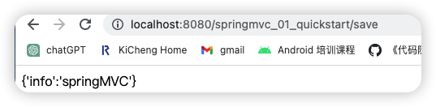
流程解析
将SpringMVC的使用过程总共分两个阶段来分析，分别是启动服务器初始化过程和单次请求过程。
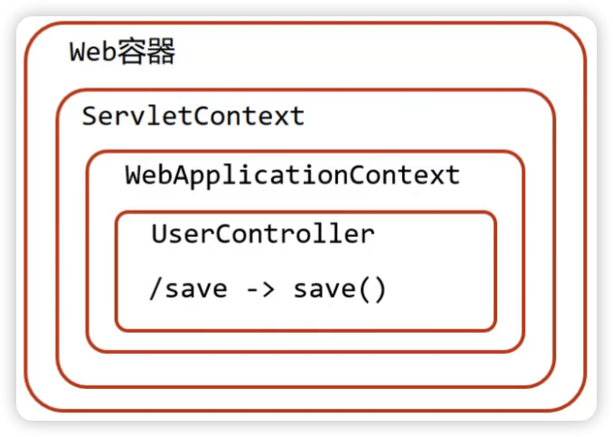启动服务器初始化
1、服务器启动，执行ServletInitConfig类，初始化web容器（功能类似于以前的web.xml）
2、执行createServletApplicationContext方法，创建了WebApplicationContext对象，加载SpringMvcConfig配置类来初始化SpringMVC的容器
1 | //初始化WebApplicationContext对象 |
3、加载SpringMvcConfig配置类，执行@ComponentScan加载对应的bean，扫描指定包及其子包下所有类上的注解，这里是@Controller
1 |
4、加载Controller类，每个@RequestMapping的名称对应一个具体的方法：建立了/save和save方法的对应关系
1 |
|
5、执行getServletMappings方法，设定SpringMVC拦截请求的路径规则：/代表所拦截请求的路径规则，只有被拦截后才能交给SpringMVC来处理请求
1 | return new String[]{"/"}; |
单次请求过程
1、发送请求 http://localhost:8080/springmvc_01_quickstart/save
2、web容器发现该请求满足SpringMVC拦截规则，将请求交给SpringMVC处理
3、解析请求路径/save，由/save匹配执行对应的方法save()
4、检测到有@ResponseBody直接将save()方法的返回值作为响应体返回给请求方
Bean加载控制
问题分析
之前我们创建过SpringConfig配置类，在MVC中也创建了SpringMvcConfig配置类，它们都需要加载资源，它们分别都加载哪些内容呢？
我们目前写过的Config配置类有：ServletInitConfig, SpringConfig, SpringMvcConfig, JdbcConfig, MybatisConfig。
controller目录存放的是SpringMVC的controller类、service目录存放的是service接口和实现类、dao目录存放的是dao/Mapper接口。controller、service和dao这些类都需要被容器管理成bean对象，SpringMVC加载表现层bean，也就是controller包下的类；Spring控制业务层service的bean和功能bean（DataSource, SqlSessionFactoryBean, MapperScannerConfigurer等），我们需要让Spring和SpringMVC分开加载各自的内容。
在SpringMVC的配置类SpringMvcConfig中使用注解@ComponentScan，我们只需要将其扫描范围设置到controller即可：
1 |
|
在Spring的配置类SpringConfig中使用注解@ComponentScan ，当时扫描的范围中其实是已经包含了controller：
1 |
|
因为功能不同，所以我们需要避免Spring错误加载到SpringMVC的bean。
环境准备
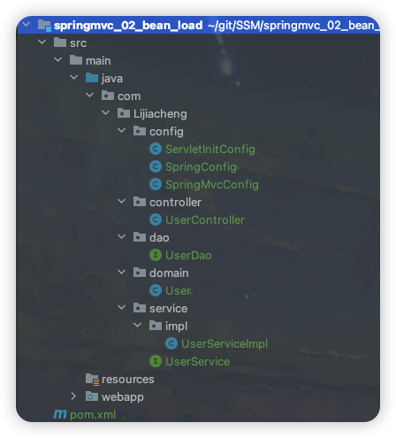设置Bean加载控制
方式一：修改Spring配置类，设定扫描范围为精准范围
1 |
|
上述只是通过例子说明可以精确指定让Spring扫描对应的包结构，真正在做开发的时候，因为Dao最终是交给MapperScannerConfigurer对象来进行扫描处理的，我们只需要将其扫描到service包即可。
方式二：修改Spring配置类，排除掉controller包中的bean
1 |
|
这样，通过getBean获取Controller类，如果获取不到就说明在SpringConfig配置类中排除成功了。
需要把SpringMvcConfig配置类上的
@ComponentScan注解注释掉才可以测试成功。因为SpringConfig类中扫描的包是com.Lijiacheng下除了controller包，config中的SpringMvcConfig就会被扫描到，里面又有一个@ComponentScan又将controller类扫描进来了。
最后一点也很重要，有了SpringConfig配置类，要想在tomcat服务器启动将其加载，我们需要修改ServletInitConfig配置类中的最后一个函数，将Spring配置也加载进来，很简单：
1 | protected WebApplicationContext createRootApplicationContext() { |
简化ServletInitConfig配置类开发（以后用它更简单，不过上面的是老母子）
1 | public class ServletInitConfig extends AbstractAnnotationConfigDispatcherServletInitializer { |
Bean加载控制总结
@ComponentScan有个很重要的属性：excludeFilters排除扫描路径中加载的bean，需要指定类别（type）和具体项（classes）；includeFilter相反。
SpringMVC的请求与响应
SpringMVC是web层的框架，主要的作用是接收请求、响应结果，所以这一部分是学习SpringMVC的重点内容。
设置请求映射路径
环境准备
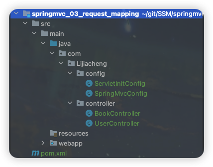开启Tomcat服务器，发生报错：
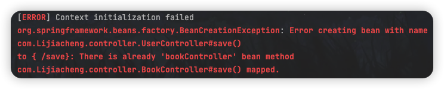
意思是/save已经是bookController这个bean的方法进行匹配了，而另一个UserController这个bean也有一个/save，出现了request请求的匹配模糊。
问题分析
前面说到报错，是因为两个Controller中出现了重复的请求路径：
1 |
|
解决思路其实也很好想到：为不同模块设置模块名作为请求路径前缀。
对于BookController的save，将其访问路径设置 http://localhost:8080/springmvc_03_request_mapping/book/save；对于UserController的save，将其访问路径设置 http://localhost:8080/springmvc_03_request_mapping/User/save。
设置映射路径
类上也可以添加@RequestMapping注解：
1 |
|
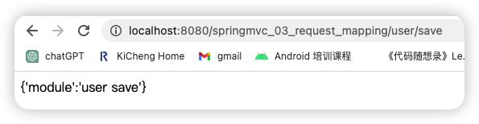
@RequestMapping注解value属性前面加不加/都可以，这一点和Servlet有所不同！
请求参数
请求路径设置好后，只要确保页面发送请求地址和后台Controller类中配置的路径一致，就可以接收到前端的请求，接收到请求后，如何接收页面传递的参数。请求参数的传递与接收是和请求方式有关系的，目前比较常见的两种请求方式POST和GET。
环境准备
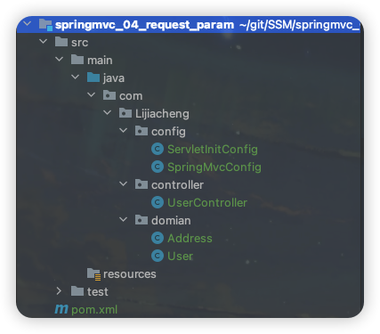参数传递
GET发送单个参数
客户端发送请求与参数：
服务端接收参数：
1 |
|
这里controller方法的形参负责接收来自客户端的请求参数（注意形参名要和请求参数名一致！）
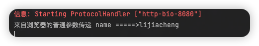
客户端接收到的返回数据：
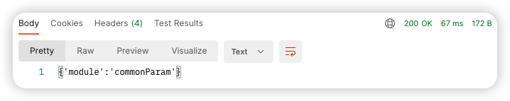
GET发送多个参数
发送请求与参数：
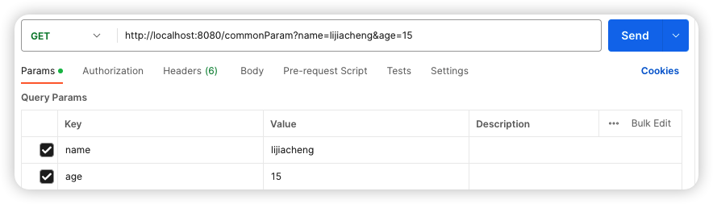服务端接收参数：
1 |
|
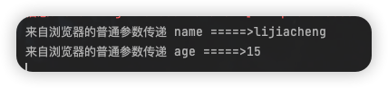
GET请求中文乱码问题
如果我们传递的请求参数中有中文，你会发现接收到的参数会出现中文乱码问题。
出现乱码的原因相信大家都清楚（忘了的话回去看JavaWeb的博客），Tomcat8以后的版本已经处理了中文乱码的问题，但是IDEA中的Tomcat插件目前只更新到Tomcat7，所以需要修改pom.xml中tomcat插件的配置来解决GET请求中文乱码问题。
1 | <configuration> |
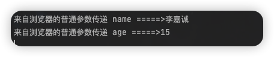
POST发送参数
发送请求与参数：post的请求参数在请求体上
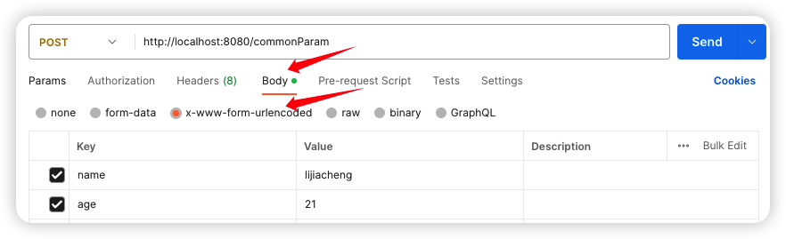接收参数和GET完全一致！
POST请求中文乱码问题
解决方案：在ServletInitConfig中配置过滤器
1 | /* 乱码处理 */ |
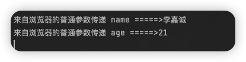
CharacterEncodingFilter是在spring-web包中，而spring-web包又在SpringMVC包里。
五种类型的参数传递
前面我们已经能够使用GET或POST来发送请求和数据，所携带的数据都是比较简单的数据，接下来在这个基础上，我们来研究一些比较复杂的参数传递：普通参数、POJO类型参数、嵌套POJO类型参数、数组类型参数、集合类型参数。
普通参数
普通参数：url地址传参，地址参数名与形参变量名相同，定义形参即可接收参数。
能接收到参数的前提是：这两个值必须一致！

那如果方法形参和请求参数名不一致怎么办？
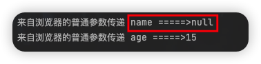
使用@RequestParam注解：写上@RequestParam注解框架就不需要自己去解析注入，能提升框架处理性能。
1 |
|
POJO类型参数
简单数据类型一般处理的是参数个数比较少的请求，如果参数比较多，那么后台接收参数的时候就比较复杂，这个时候我们可以考虑使用POJO数据类型。
POJO参数：请求参数名与形参对象属性名相同，定义POJO类型形参即可接收参数（请求参数key的名称要和POJO中属性的名称一致，否则无法封装）。
先看看前面封装的pojo类：
1 | public class User { |
发送请求和参数（请求参数key的名称要和POJO中属性的名称一致，否则无法封装）：
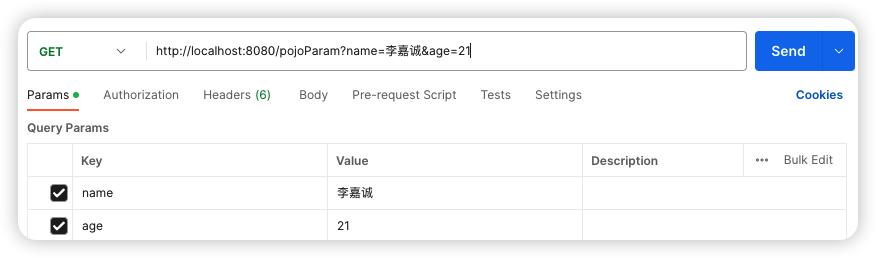服务器接收参数：
1 |
|
嵌套POJO类型参数
嵌套POJO参数：请求参数名与形参对象属性名相同，按照对象层次结构关系即可接收嵌套POJO属性参数。
发送请求和参数（请求参数key的名称要和POJO中属性的名称一致，否则无法封装）：
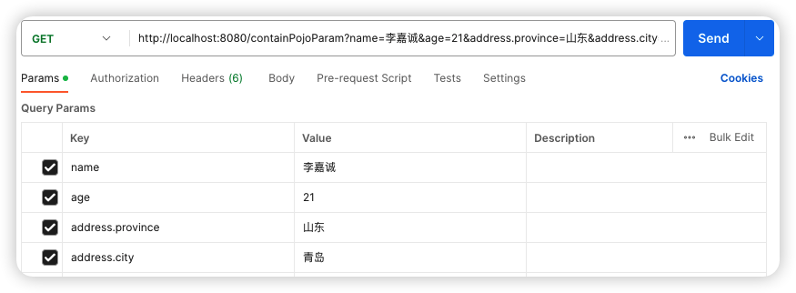服务器接收参数：
1 |
|
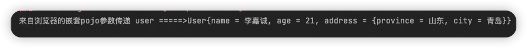
数组类型参数
数组参数：请求参数名与形参对象属性名相同且请求参数为多个，定义数组类型即可接收参数。
发送请求和参数（请求参数名必须一致才能封装到一个数组当中）：
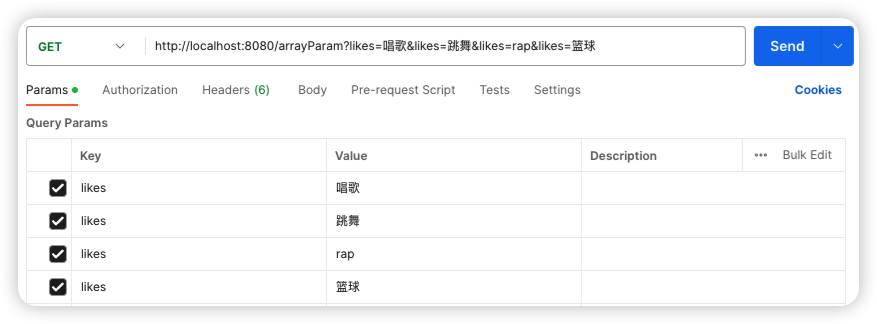服务器接收参数：
1 |
|
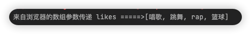
集合类型数据
发送请求和参数：
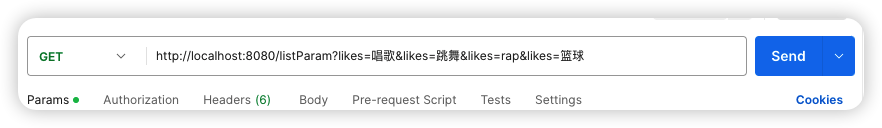
服务器接收参数：
1 |
|
出现报错：
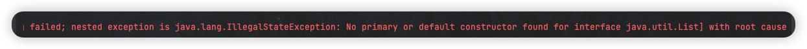
错误的原因是：SpringMVC将List看做是一个POJO对象来处理，将其创建一个对象并准备把前端的数据封装到对象中，但是List是一个接口无法创建对象，所以报错。
解决方案：RequestParam注解（对于简单数据类型使用数组会比集合更简单些）
1 |
|
总结
RequestParam注解用在SpringMVC控制器方法形参定义前面：情况1——简单数据类型参数名和请求参数名不一致时进行映射；情况2——对于List列表形参前要加该注释将其标明为非POJO对象。
JSON数据传输参数
前面我们说过，现在比较流行的开发方式为异步调用。前后端以异步方式进行交换，传输的数据使用的是JSON，所以前端如果发送的是JSON数据，后端该如何接收。
SpringMVC接收JSON数据的实现步骤为：
- 导入jackson包；
- 客户端发送JSON数据；
- 开启SpringMVC注解驱动，在SpringMvcConfig配置类上添加
@EnableWebMvc注解； - Controller方法的参数前添加
@RequestBody注解.
JSON普通数组
步骤1：pom.xml添加依赖
1 | <dependency> |
步骤2：PostMan发送JSON数据
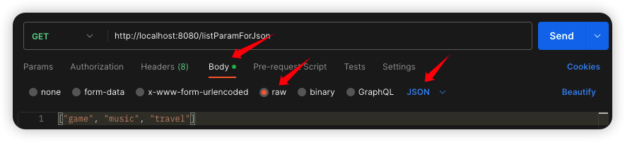步骤3：开启SpringMVC注解支持
在SpringMVC的配置类中开启SpringMVC的注解支持，这里面就包含了将JSON转换成对象的功能。
1 |
|
步骤4：参数前添加@RequestBody将外部传递的json数组数据映射到形参的集合对象中作为数据
1 | // 使用@RequestBody注解将外部传递的json数组数据映射到形参的集合对象中作为数据 |
因为json数据是异步请求，参数和数据在表单中，所以不能用
@RequestParam，而用@RequestBody.
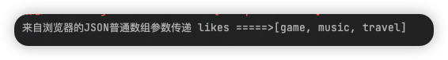
JSON对象数据
请求和数据的发送：
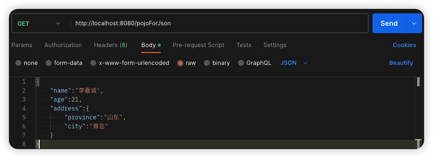后端接收数据：
1 |
|
这里也不要忘记在controller方法形参对象前加上
@RequestBody进行json类型转换。
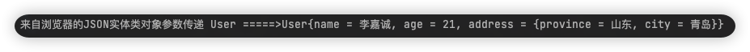
JSON对象数组
json对象数组即为在集合中保存多个POJO。
请求和数据的发送：
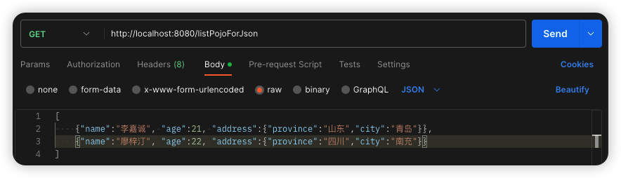后端接收数据：
1 |
|
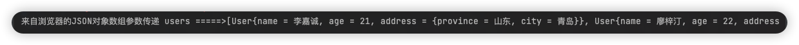
@RequestBody与@RequestParam的区别：
@RequestParam用于接收url地址传参，表单传参【application/x-www-form-urlencoded】；@RequestBody用于接收json数据【application/json】.后期开发中，发送json格式数据为主，
@RequestBody应用较广；如果发送非json格式数据，选用@RequestParam接收请求参数。
日期类型参数传递
前面我们处理过简单数据类型、POJO数据类型、数组和集合数据类型以及JSON数据类型，接下来我们还得处理一种开发中比较常见的一种数据类型：日期类型。
日期的格式有N多中输入方式，比如：2088-08-18、2088/08/18、08/18/2088……这么多日期格式，SpringMVC如何接收。
步骤1：编写方法接收日期数据
1 |
|
步骤2：客户端发送请求
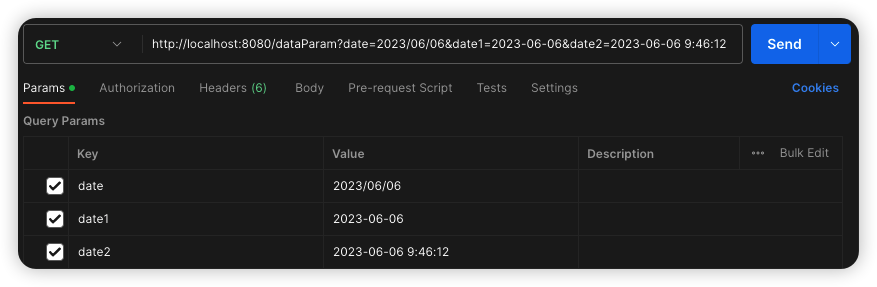SpringMVC默认支持的字符串转日期的格式为yyyy/MM/dd ，而如果传递的不符合其默认格式，SpringMVC就无法进行格式转换，所以报错：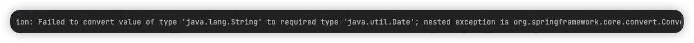
所以使用
@DateTimeFormat注解的pattern值来解决这个问题。

参数传递的内部实现原理
前端传递字符串，后端使用日期Date接收；前端传递JSON数据，后端使用对象接收；前端传递字符串，后端使用Integer接收。在数据的传递过程中存在很多类型的转换，那么谁来做这个类型转换——是SpringMVC提供的很多类型转换接口和实现类。
在框架中，有一些类型转换接口，其中有：
- Converter接口：convert方法就是将从页面上接收的数据(S)转换成我们想要的数据类型(T)返回，框架中有提供很多对应Converter接口的实现类，用来实现不同数据类型之间的转换，如：请求参数年龄数据（String→Integer）、日期格式转换（String → Date）。
- HttpMessageConverter接口：该接口是实现对象与JSON之间的转换工作（配置
@EnableWebMvc）。
响应
SpringMVC接收到请求和数据后，进行一些了的处理，当然这个处理可以是转发给Service，Service层再调用Dao层完成的，不管怎样，处理完以后都需要将结果告知给用户。对于响应，主要就包含两部分内容：响应页面、响应数据（文本数据、json数据），因为异步调用是目前常用的主流方式，所以我们需要更关注的就是如何返回JSON数据。
环境准备
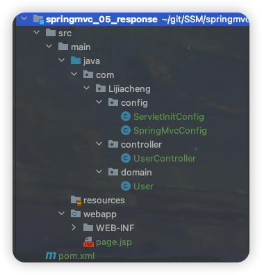响应页面（了解）
响应页面时不能使用@responseBody注解，否则会把”page.jsp”当做字符串返回，这里需要返回页面：
1 | // 不能使用@responseBody，否则会把"page.jsp"当做字符串返回，这里需要返回页面 |
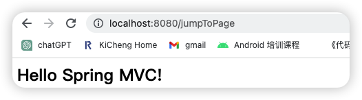
响应文本数据
响应文本时一定要使用@responseBody注解，返回纯文本字符串类型数据。
1 |
|
响应JSON数据
响应POJO对象
返回值为实体类对象，设置返回值为实体类类型，即可实现返回对应对象的json数据，需要依赖@ResponseBody注解和@EnableWebMvc注解。
1 |
|
响应POJO集合对象
1 |
|
@ResponseBody总结
位置：SpringMVC控制器方法定义上方和控制类上，写在类上则该类的所有方法都有该注解功能；
作用：设置当前控制器返回值作为响应体（除了返回页面之外都要加该注释）：① 方法的返回值为字符串，会将其作为文本内容直接响应给前端；② 方法的返回值为对象，会将对象转换成JSON响应给前端（通过Converter接口）。

This is my Blog